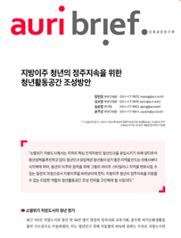
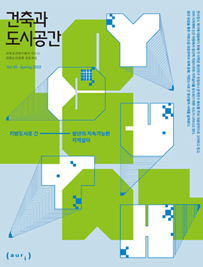

소개
연구분야
발간물
소식
건축도시공간 연구소가 만드는
건축도시정책 전문저널
건축과 도시공간
auri
HIGHLIGHT
auri TV
카드뉴스
정기간행물
건축과 도시공간


◈ 대한건축학회-건축공간연구원 공동 학술 심포지엄 ◈
건축자산 및 역사문화자원
관련제도와 발전방향 심포지엄
건축자산 및 역사문화자원에 관심있는 일반 시민의 참여를 기다립니다
심포지엄 참여하기 ＞